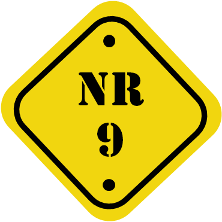

As Normas Regulamentadoras (NRs) nada mais são do que o conjunto de orientações e procedimentos técnicos relativos à Segurança e Medicina do Trabalho.
A importância da aplicação das NRs é imensurável e, felizmente, a implantação de práticas seguras nos ambientes de trabalho estão crescendo consideravelmente, dia após dia.
Atualmente é difícil encontrarmos um funcionário que nunca tenha passado por pelo menos uma palestra sobre fatores de risco existentes no seu local de trabalho; prevenção de acidentes de trabalho; utilização de equipamentos de proteção individual (EPIs), entre tantos outros temas relativos à Segurança e à Saúde do Trabalhador.
Por meio das ações de prevenção desenvolvidas nas empresas podemos evitar a ocorrência de acidentes de trabalho e de doenças ocupacionais. O que nos leva não somente a evitar acidentes, mas também, a aumentar a produção, pois tornando o ambiente mais agradável e seguro os funcionários produzirão mais e com melhor qualidade.
As NRs se aplicam a todos os ramos de atividades. Evidente que cada segmento de atuação tem suas características e fatores de risco específicos e, exatamente por isso, cada ambiente precisa ser tratado de uma forma particular.
Em 1977, a Lei n.º 6.514 foi sancionada aprovando alterações no Capítulo V do Título II da Consolidação das Leis do Trabalho (CLT), o qual trata da saúde e da segurança do trabalho. No ano seguinte, em 8 de junho de 1978, foi então aprovada a Portaria n.º 3.214, a qual institui 28 NRs que detalham a aplicação da citada lei e definiu parâmetros, procedimentos, determinações e outros em matéria de Segurança e Medicina do Trabalho.
Mesmo que as empresas atendam os ditames das NRs não as desobriga de cumprirem com demais disposições com relação à matéria, sejam incluídas em códigos de obras, por exemplo, e outras, provenientes de acordos e convenções coletivas de trabalho.
Desde a divulgação, em 8 de junho de 1977, da Portaria 3.214, as NRs, vêm sendo sistematicamente atualizadas pelas comissões tripartites através das portarias. Essas alterações passam a constar no texto das NRs feitas após a publicação desses instrumentos legais. Algumas alterações podem ser programadas para entrar em vigor em uma data futura, outras podem entrar em vigor de forma imediata. Devido a isso, recomenda-se sempre verificar as normas diretamente nos sites oficiais do governo (gov.br), nos quais estarão atualizadas.
Além das NRs, são publicados, sistematicamente, outros preceitos legais relativos à Segurança e Medicina do trabalho, os quais fazem parte da literatura especializada no assunto. E cada empresa deve adequar-se conforme o conteúdo redigido por cada uma delas, sempre que o ramo de atividade aplicar-se ao descrito na Norma.
As NRs são elaboradas por uma Comissão Tripartite composta por representantes do Governo, dos empregadores e dos empregados, totalizando 38 normas. As NRs relativas aos riscos ambientais (físicos, químicos e biológicos) são a NR-9 e a NR-15. A primeira estabelece alguns procedimentos de avaliação dos agentes, e a segunda é usada para determinar os limites de tolerância dos agentes para o pagamento dos adicionais de insalubridade.
 A NR-09 estabelece os requisitos para a avaliação das exposições ocupacionais a agentes físicos, químicos e biológicos, quando identificados no Programa de Gerenciamento de Riscos (PGR), previsto na NR-1, e fornece subsídios quanto às medidas de prevenção a riscos ocupacionais.
Ao realizar a identificação e o seu competente registro, algumas necessidades são claras e dentre o mínimo a ser informado temos:
Podem ser relacionados dados de avaliação ambiental que tenham sido obtidos. Observe que a fase de identificação pode ocorrer com ou sem avaliação ambiental pré-existente. Mais do que isso, a fase de identificação, que a empresa realiza, é o registro completo do inventário dos riscos que os ambientes apresentam, independentemente se já existirem atividades de higiene ocupacional, com ou sem avaliações realizadas.
É claro que essa primeira fotografia da situação pode e deve incluir tudo o que já vem sendo feito em termos de medidas de controle em geral e/ou avaliações. É no mínimo justo que, assim como a empresa se autodeclara quanto aos fatores de risco que apresenta, possa também demonstrar o que vem realizando para controlá-los.
Todas as previsões podem e devem estar incluídas na etapa do reconhecimento, justificando as prioridades adotadas e as metas a que se propõe a empresa no controle dos riscos ambientais.
A identificação dos agentes ambientais é realizada, de modo geral, com a utilização de planilhas de fácil montagem e interpretação, constando todos os dados requeridos na NR-01, entre eles: os setores inspecionados, o número de funcionários expostos aos agentes, as jornadas de trabalho, as características dos locais de trabalho, as atividades desenvolvidas, as proteções coletivas existentes, as máquinas e os equipamentos utilizados, as matérias-primas e os produtos manipulados e os agentes analisados e avaliados.
Segue a descrição dos campos utilizados nas planilhas:
Clique ou toque nos títulos para expandir o conteúdo.
Fator de risco
Fator de risco ambiental identificado na etapa de identificação.
Causa / Fonte
Especifica a causa da presença do fator de risco ou a fonte que o produz.
Efeito
Inclui os efeitos conhecidos da literatura técnica.
Medidas de controle
Descrevem as medidas atualmente empregadas, as quais podem envolver medidas coletivas, administrativas e de organização e EPIs.
Clique para baixar um modelo de planilha devidamente preenchida. Usaremos como exemplo uma empresa de topografia que trabalha na marcação de cotas / medidas para construção de estradas.
Baixe aqui o material em PDFNR-15 – Esta norma objetiva, principalmente, apresentar os limites de tolerância e os requisitos técnicos visando à caracterização de atividade ou operação insalubre e o pagamento de adicional de insalubridade. Leva-se em conta os agentes físicos, químicos e biológicos.
Conforme a CLT, a existência da NR-15 está disposta em alguns artigos que falaremos a seguir.
De acordo com o Artigo 189 serão consideradas operações ou atividades insalubres aquelas que, por suas condições ou métodos de trabalho ou por sua natureza exponham os trabalhadores a agentes agressivos à saúde, acima dos limites de tolerância os quais são fixados em razão da intensidade e da natureza do agente e do tempo de exposição aos seus efeitos.
O que queremos dizer com isso é que a proteção da saúde do trabalhador dentro das empresas considera os seguintes agentes:
Ainda segundo o Artigo nº 189, a insalubridade só se configura quando ultrapassado o limite de tolerância. Porém, é válido lembrar que os agentes biológicos, embora caracterizadores de insalubridade, não se submetem a um limite de tolerância, e sim a atividade realizada.
Os limites de tolerância são:
No Brasil, como em qualquer outra parte do mundo, o limite de tolerância corresponde aquilo que, em média, as pessoas podem suportar sem dano para a saúde.
O Artigo nº 190, da CLT, estabelece que é responsabilidade do órgão competente criar e aprovar uma lista oficial de atividades e operações insalubres, bem como definir os seguintes aspectos:
A NR-15 se dedica às atividades e operações insalubres. A mesma é composta de 14 Anexos: ruído contínuo ou intermitente; ruído de impacto; calor; iluminamento (foi revogado da NR-15 e consta na NR-17 atualmente); radiação ionizante; pressões hiperbáricas (trabalho sob ar comprimido); radiações não ionizantes; vibrações; frio; umidade; agentes químicos com limites de tolerância; poeiras minerais; agentes químicos sem limites de tolerância e agentes biológicos. Existe, ainda, um quadro com os graus de insalubridade de cada agente agressivo.
É entendido por limite de tolerância, através do item 15.1.5, a concentração mínima ou máxima, relacionada com o tempo de exposição ao agente e a natureza, a qual não causará prejuízo à saúde do trabalhador, durante sua vida laboral. Uma vez conceituado o limite de tolerância, devemos concluir que a configuração da insalubridade só acontece quando o trabalhador é exposto ao agente por tempo superior ao previsto, em função da sua natureza, concentração ou intensidade.
A neutralização ou a eliminação da insalubridade ocorrerá, segundo o Artigo nº 191, da CLT, quando forem adotadas medidas que preservem o ambiente de trabalho dentro dos limites de tolerância, por meio das medidas de caráter coletivo e/ou com a utilização de EPIs.
Podemos exemplificar por meio do Anexo 1, da NR-15, no qual encontramos os limites de tolerância para ruídos contínuos e intermitentes. Trabalhadores que estão expostos a agentes além do limite de tolerância sem a devida proteção estão em uma condição que caracteriza a insalubridade.
O Anexo 1 também estabelece um valor que serve de teto para a exposição ao ruído intermitente para trabalhadores desprotegidos, determinando que nenhum trabalhador, em momento algum, deve estar exposto a níveis superiores a 115 dB(A). Caso isso ocorra, a situação é considerada um risco grave e iminente, o que requer a adoção imediata de controles sob pena de interdição da atividade ou da máquina que gera a exposição ou ainda do setor onde a atividade ocorre.
Enquanto a empresa não neutralizar ou eliminar o risco à saúde ou a integridade física dos seus trabalhadores terá que pagar o adicional de insalubridade aos mesmos.
O Artigo 192 determina a percepção dos adicionais de insalubridade em 40%, 20% e 10% do salário mínimo da região para os graus máximo, médio e mínimo, respectivamente.
O adicional é exigível enquanto o empregador não adequar o ambiente de trabalho dentro dos limites de tolerância.
O percentual relativo ao adicional de insalubridade acontece sobre o salário mínimo profissional fixado por lei. O cálculo deve ter por base o salário mínimo e isto independentemente do salário ajustado no contrato de trabalho.
No Brasil utilizamos a Portaria 3.214 de 1978 como norteadora nos aspectos de saúde e segurança do trabalhador. As NRs que tratam dos fatores de riscos físicos, químicos e biológicos são a NR-9 e a NR-15.
Como futuro Técnico de Segurança do Trabalho, você deve estar ciente de que mais do que identificar os riscos nos ambientes de trabalho, é necessário tratá-los e monitorá-los.
Como complemento da NR-15, o profissional deve também buscar informações e outras recomendações nas normas da Fundacentro, Associação Brasileira de Higienistas Ocupacionais (ABHO), National Institute for Occupational Safety and Health (NIOSH), Occupational Safety and Health Administration (OSHA) e American Industrial Hygiene Association (AIHA), além da American Conference of Govermental Industrial Hygienists (ACGIH).


- Estar navegando no Google Chrome
ou
- Ter uma máquina virtual para criação de PDFs instalada no computador, como Adobe PDF e doPDF
O Google Chrome nativamente já oferece suporte para conversão de conteúdo HTML em PDF, diferentemente de Firefox, Internet Explorer e outros. Nestes casos, a máquina virtual é importante.
Envie o documento para impressão clicando no botão Imprimir ou usando o comando Ctrl + P.
Na opção Destino, altere a impressora para Salvar em PDF.
Clique em Imprimir.
Escolha um local para salvar o arquivo e, se necessário, altere o seu nome.
Clique em Salvar.